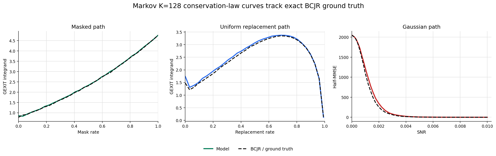
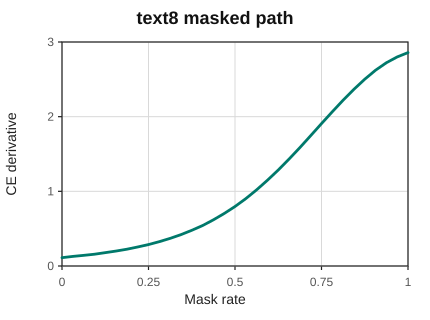
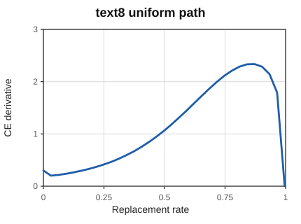
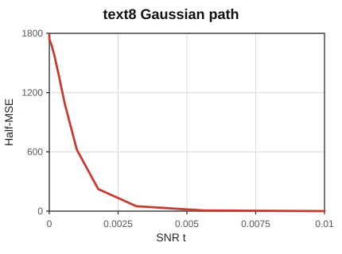
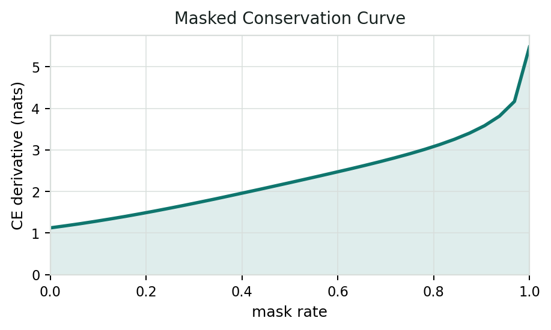
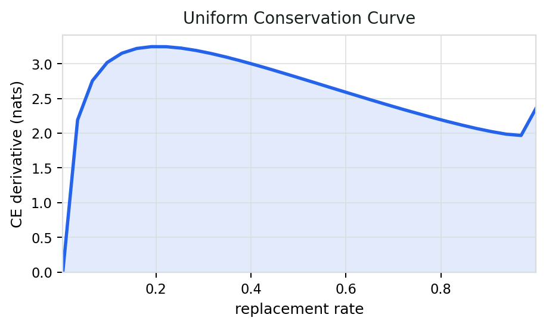
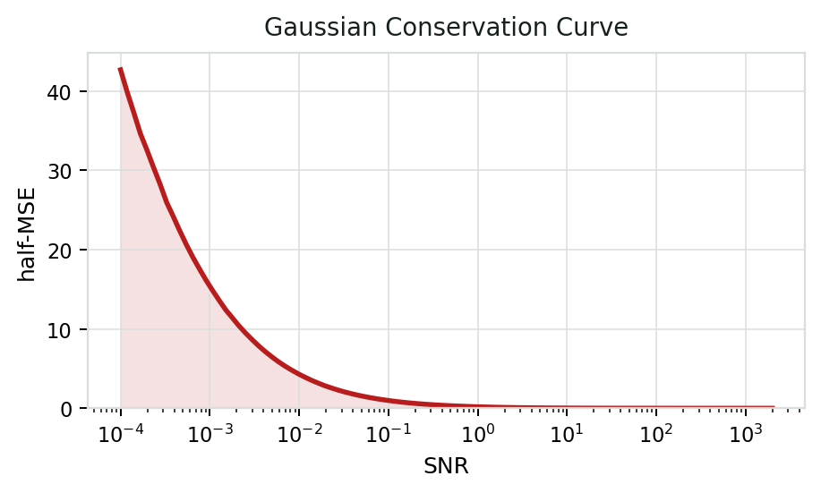
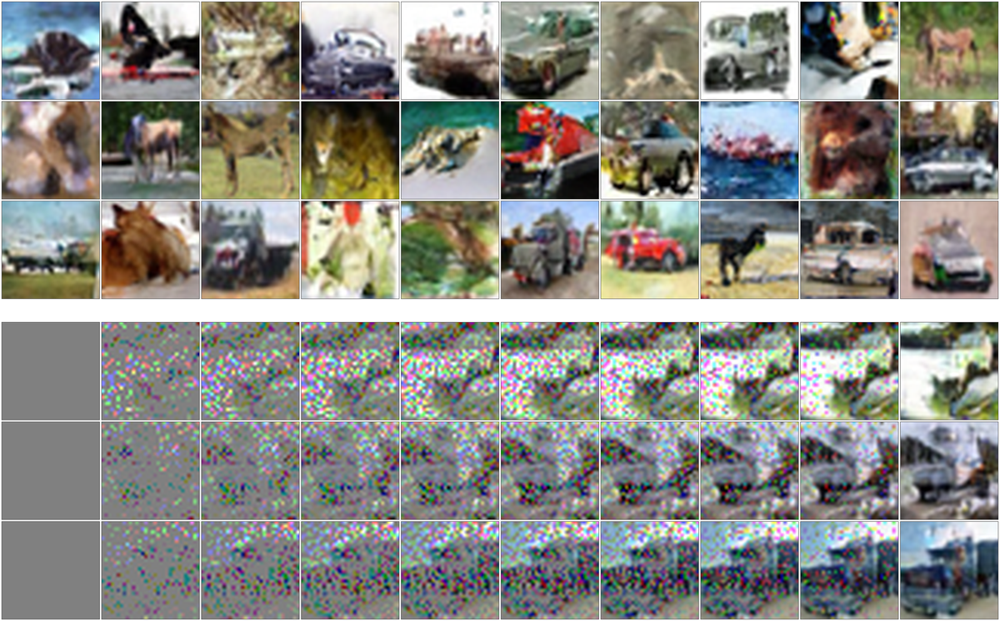
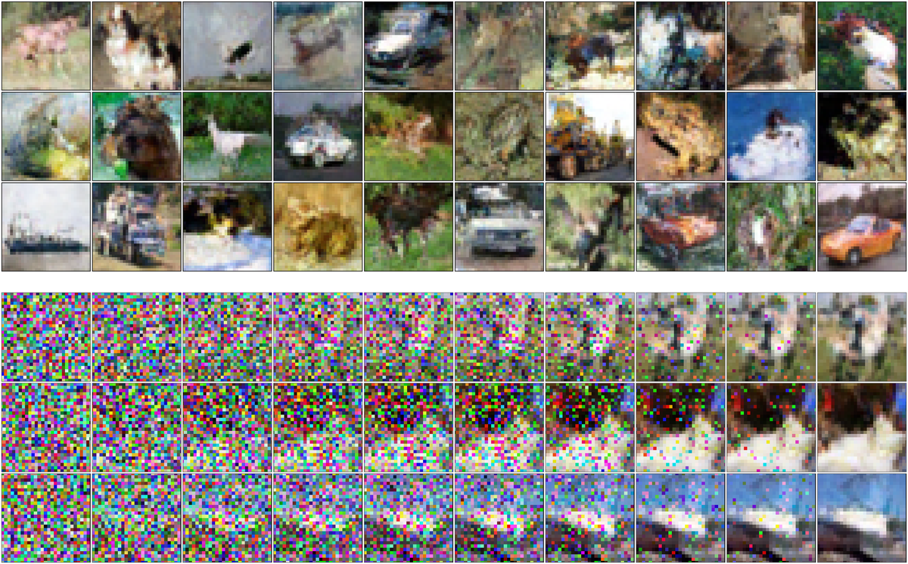
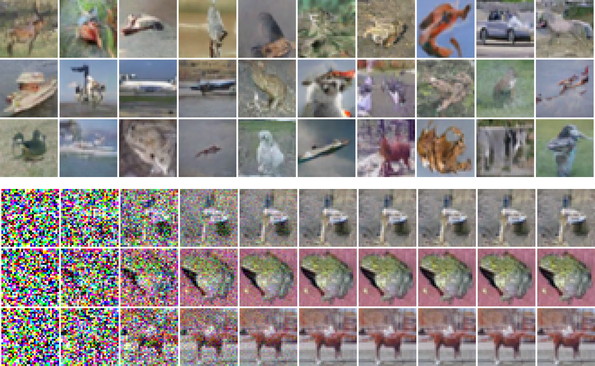

Conservation Laws for Diffusion Models
TLDR. For memoryless noise processes, marginal posteriors along the noise path characterize the likelihood of the underlying data distribution. The channel type is therefore a design variable that is theoretically likelihood-invariant, but finite-capacity denoisers make this choice matter in practice.
Abstract
While autoregressive models optimize the exact likelihood implied by the chain rule, diffusion models are typically trained with denoising objectives. We develop conservation laws based on generalized extrinsic information transfer (GEXIT) functions for a broad class of memoryless noise processes, showing that the data-model cross-entropy can be characterized exactly as an integral of local information-theoretic derivatives along the noise path.
This gives a unified likelihood characterization for discrete and continuous diffusion, with the Gaussian case reducing to the mutual information-minimum mean-square error (I-MMSE) relationship. The conservation law also gives a locality property: for memoryless noise processes, the marginal posteriors along the noise path are sufficient to characterize the likelihood of the underlying distribution, so training reduces to learning those marginal posteriors by minimizing negative log-likelihood.
Although the conservation law implies that entropy is independent of the noise path, the channel type remains a design variable. In practice, finite-capacity denoisers approximate the posteriors with different accuracy across noise types, so the choice of channel affects performance. We validate these predictions on synthetic Markov sources and standard benchmarks, including text8 and CIFAR-10.
Cross-Entropy Conservation Law
Using the notation below, the main theorem of the paper states that the data-model cross-entropy is conserved as an area along any memoryless noising path from clean data to pure noise.
| Notation | Meaning |
|---|---|
| \(P_X\) | Data distribution over clean sequences \(X=(X_1,\ldots,X_n)\). |
| \(Q_X\) | Model-induced distribution whose cross-entropy against \(P_X\) is evaluated. |
| \(Y(\mathbf t)\) | Noised observation generated by applying coordinate-wise noise levels \(\mathbf t=(t_1,\ldots,t_n)\). |
| \(W_{t_i}(y_i\mid x_i)\) | Known memoryless forward channel for coordinate \(i\). |
| \(\gamma(\tau)\) | Path through noise-parameter space from clean data to pure noise. |
| \(\dot\gamma_i(\tau)\) | Speed of the path in coordinate \(i\), weighting that coordinate's local derivative. |
| \(Q_{X_i\mid Y}\) | Model marginal posterior used to evaluate the local derivative. |
| \(S_t(x,y)\) | Channel score \(\partial_t\log W_t(y\mid x)\). |
General CE identity
The theorem writes cross-entropy as the path integral of local CE derivatives.
\[ \operatorname{CE}(P_X,Q_X) = \int_0^1 \sum_{i=1}^n \dot{\gamma}_i(\tau) \frac{\partial}{\partial t_i} \operatorname{CE}\!\left( P_{X_i\mid Y(\mathbf t)}, Q_{X_i\mid Y(\mathbf t)} \right) \Big|_{\mathbf t=\gamma(\tau)} d\tau . \]Score-likelihood derivative
The local derivative is evaluated from marginal posteriors and the channel score.
\[ \begin{gathered} S_t(x,y)=\partial_t\log W_t(y\mid x),\\[0.35em] \frac{\partial}{\partial t_i} \operatorname{CE}\!\left(P_{X_i\mid Y},Q_{X_i\mid Y}\right) = \mathbb E_P\!\left[ -S_{t_i}(X_i,Y_i)\log Q_{X_i\mid Y}(X_i\mid Y) + \mathbb E_{X'\sim Q_{X_i\mid Y}(\cdot\mid Y)} \!\left[S_{t_i}(X',Y_i)\mid Y\right] \right]. \end{gathered} \]Markov Ground-Truth Validation
For synthetic Markov sources, the BCJR algorithm gives exact conservation-law integrands. The solid model curves track the dashed ground-truth curves for masked, uniform replacement, and Gaussian noise paths at alphabet size 128.

| Method | Area (nats) | Rel. error |
|---|---|---|
| EXIT | 2.484 | 1.24% |
| QSC | 2.520 | 2.74% |
| I-MMSE | 2.701 | 10.09% |
text8 Results
The language-model experiments evaluate byte-level text8 without external data. Results are reported in bits per character; lower is better.



| Model | External data | BPC |
|---|---|---|
| Our methods | ||
| masked (ours) | No | 1.424 |
| uniform (ours) | No | 1.513 |
| Gaussian (ours) | No | 2.087 |
| Reference methods | ||
| D3PM mask/absorbing | No | ≤ 1.45 ± 0.02 |
| SEDD Absorb | No | ≤ 1.39 |
| MDLM | Yes | ≤ 1.40 |
| MD4 | Yes | ≤ 1.37 |
| EDLM | Yes | ≤ 1.24 |
CIFAR-10 Results
The image-token experiments use the same conservation-law viewpoint on CIFAR-10 RGB8 tokens. The tables reproduce the NeurIPS sample-quality and likelihood comparisons.
Conservation Curves



Sample Quality
| Noise | Schedule | FID | IS |
|---|---|---|---|
| Our methods | |||
| uniform (ours) | cosine | 59.5084 | 6.21 ± 0.06 |
| masked (ours) | equal-info | 30.69 | 6.87 ± 0.08 |
| Gaussian (ours) | log-uniform | 26.66 | 7.338 ± 0.080 |
| Reference methods | |||
| D3PM uniform | cosine | 51.27 ± 2.15 | 5.99 ± 0.14 |
| D3PM absorbing | mutual-info | 41.28 ± 0.65 | 6.26 ± 0.10 |
| D3PM Gauss + logistic | linear | 7.34 ± 0.19 | 8.56 ± 0.10 |
| DDPM | linear-beta | 3.17 | 9.46 |
| Score SDE | geometric-sigma | 2.20 | 9.89 |
Likelihood
| Model | BPD |
|---|---|
| Reference methods | |
| DDPM | ≤ 3.70 |
| Improved DDPM | ≤ 3.40 |
| Score SDE | ≤ 2.99 |
| ML Score SDE | ≤ 2.99 |
| D3PM Gauss + logistic | ≤ 3.435 ± 0.007 |
| Our methods | |
| uniform | 3.66 |
| masked | 3.31 |
| Gaussian | 3.24 |
Image Generations
CIFAR-10 RGB8 samples generated with the masked, uniform, and Gaussian noise paths, with representative diffusion traces shown below each sample panel.



Citation
@misc{aharoni2026conservation,
title = {Conservation Laws for Diffusion Models},
author = {Ziv Aharoni and Henry D. Pfister},
year = {2026},
note = {arXiv identifier forthcoming},
url = {https://zivaharoni.github.io/conservation-laws-diffusion-models/}
}Replace the arXiv placeholder link and citation note after the paper is posted.